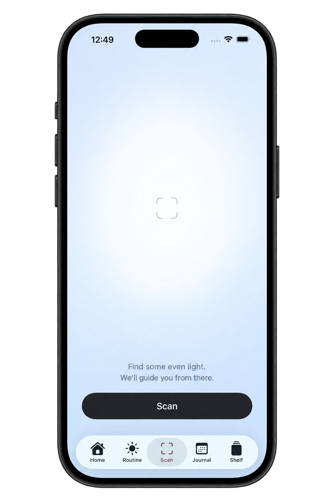

Your skincare fridge
Saved products appear on visual shelves or in a grid, with photos, favorites, and collections. The fridge opens with a small 3D door animation, and product photos can be cleaned up to remove their backgrounds.
An iOS app for keeping track of the skincare products you own. Scan a product, review its ingredients, compare it with your routine, and save it to your skincare fridge.
I wanted to understand my own skincare routine a little more like a lab experiment: what had I used, when did I break out, and when did my skin feel its best?
The project grew into a skincare fridge, with the products I own at the center. It brings together their ingredients, where they fit in my routine, and what overlaps when I consider buying something new.
Cal AI's business model inspired me to think about how something I wanted for myself could also be useful to other people.

Saved products appear on visual shelves or in a grid, with photos, favorites, and collections. The fridge opens with a small 3D door animation, and product photos can be cleaned up to remove their backgrounds.
Scan packaging, a barcode, or an ingredient label to add a product. Apple Vision reads the text on your device. You confirm the product and review the ingredient list before using it for comparisons; unknown products can be entered manually.
Compare a product with what you already own to see ingredient overlap, repeated product roles, and matches to your avoid list. Save potential purchases to a separate wishlist. Incomplete ingredient lists stay clearly marked as missing information.
Build and reorder morning and evening routines. Track whether products are unopened, opened, or finished, and record the dates from their packaging. “Use first” brings opened products and approaching label dates forward, with optional reminders.
Search can pick out product types, ingredients, and preferences from phrases like “fragrance-free moisturizer.” Saved products are searchable offline. Optional catalog lookup uses Open Beauty Facts and approved community records, with cached results and recovery messages when a source is unavailable.
A saved product can request a short Gemini explanation of its reviewed ingredients and their common cosmetic functions. The response is checked against the supplied ingredients and a limited reference of functions. The app's local comparison rules remain separate from the AI explanation.
I'm building the native iOS app in Xcode with Swift and SwiftUI. SwiftData keeps the personal fridge and routines on the device, so everyday use works offline and doesn't require an account. Apple Vision handles label reading, barcode detection, and product photo cleanup.
The JavaScript/Node.js backend and SQL database handle product records and imports. The ingestion system normalizes names and ingredient lists, avoids duplicate records, and keeps different formulations and their sources separate. Supabase provides PostgreSQL, authentication, and private storage.
Products, photos, and routines can be backed up privately through Supabase. Backup is manual, and removed products can be recovered with Undo or Recently removed. Gemini requests go through an authenticated backend, with the API key kept on the server, input checks, request limits, and cached explanations. Only the product name, brand, and reviewed ingredients go to Gemini after a disclosure.
Built with: Swift · SwiftUI · SwiftData · Xcode · Apple Vision · JavaScript/Node.js · Supabase/PostgreSQL · SQL · Google Gemini
The app is in development and running on iPhone and Simulator. Automated checks and builds cover product storage, ingredient parsing, search, backup rules, and the Gemini request flow. A live Gemini backend request has also been tested.
I'm still testing the complete explanation flow, camera scanning, backup and restore, and reminder delivery on a physical phone. The Gemini connection currently uses a temporary development backend.